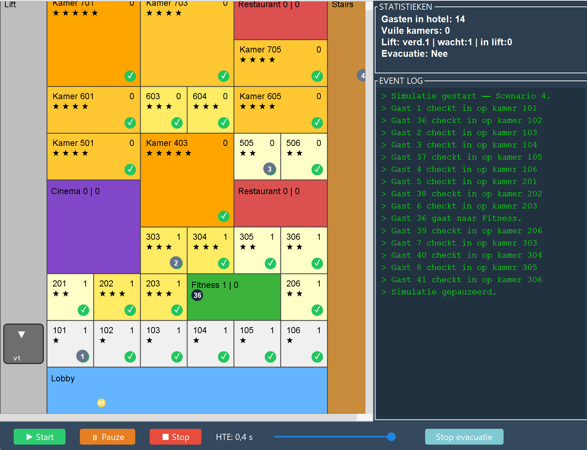
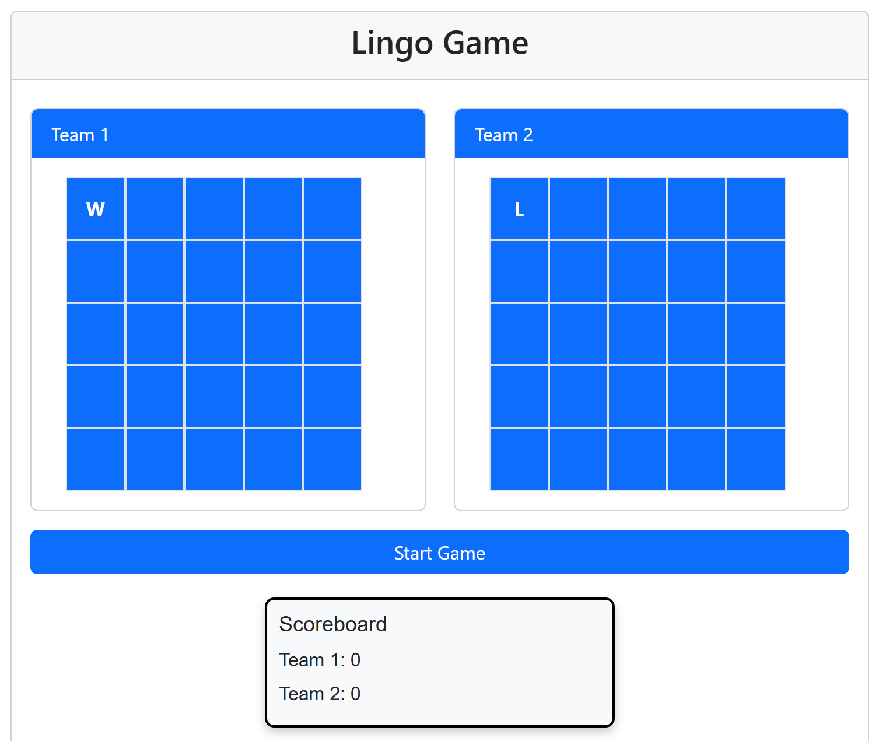
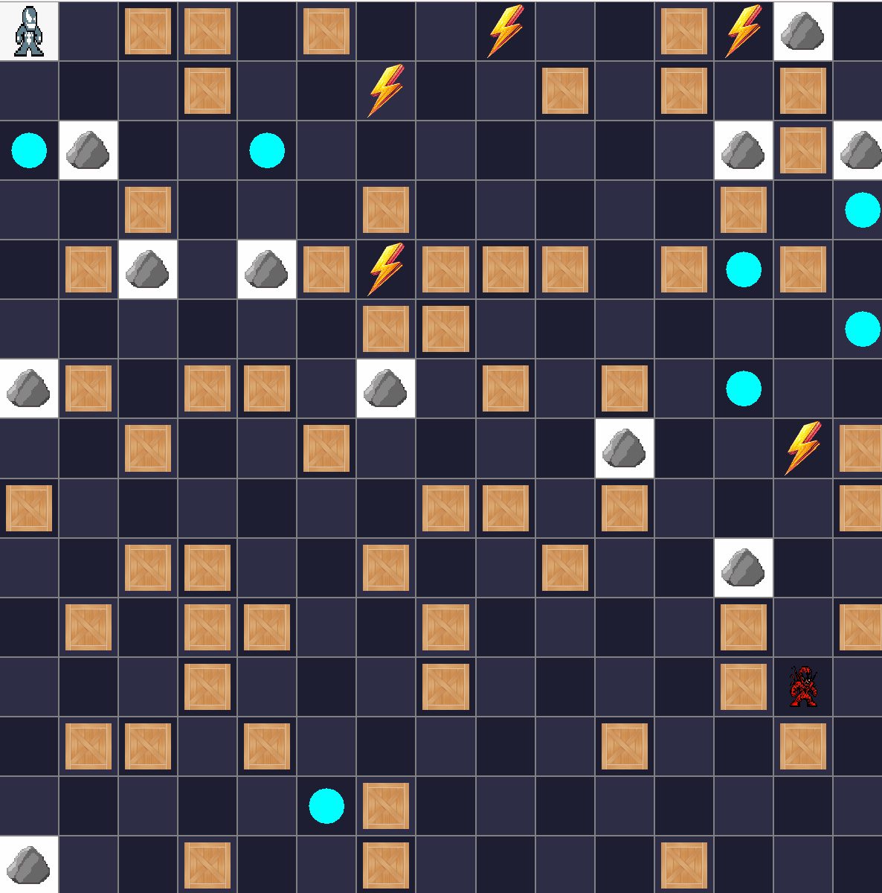

Hotel Simulator
Een Java-applicatie die de werking van een hotel simuleert. In het project werkte ik met gasten, kamers, medewerkers, events en softwarepatronen zoals MVC en Observer.
Technieken: Java, OOP, MVC, Observer, JSON
Een selectie van projecten uit mijn HBO-ICT-opleiding waarin ik verschillende programmeertechnieken en werkwijzen heb toegepast.

Een Java-applicatie die de werking van een hotel simuleert. In het project werkte ik met gasten, kamers, medewerkers, events en softwarepatronen zoals MVC en Observer.
Technieken: Java, OOP, MVC, Observer, JSON

Een webversie van het woordspel Lingo. De speler probeert het juiste woord te raden en krijgt na iedere poging visuele feedback over de letters.
Technieken: HTML, CSS, JavaScript

Een Java-spel waarin de speler zich over een speelveld beweegt terwijl een volger de speler probeert te bereiken. Ik werkte hierbij aan spellogica, pathfinding en een grafische interface.
Technieken: Java, Swing, OOP, BFS, pathfinding
In mijn blog schrijf ik kort over wat ik tijdens het bouwen van deze portfolio heb geleerd, zoals semantische HTML en responsive design.
Bekijk blog